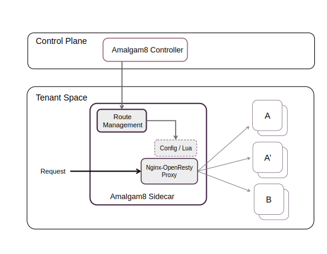

Amalgam8 Sidecar
The Almagam8 sidecar has a flexible architecture that can be configured and used by applications in a number of ways. The sidecar can be split into the following functional components:
- Service Registration - Registers a microservice instance in the Registry and sends periodic heartbeats.
- Route Management - Receives route updates from the Controller and updates the Proxy without disruption.
- Supervisor - Manages the lifecycle of an Amalgam8 Proxy server and optionally the associated microservice itself.
- Proxy - An OpenResty-based Nginx server that acts as a request forwarder and load-balancer.
Deployment Options
There are two deployment options for the sidecar. One option is to run it as a separate process in the same container alongside the application. This usage model applies to any container-based environment and requires that the sidecar binaries be bundled along with the application in the same Docker image. Amalgam8 provides convenient Docker images packaged with the sidecar, that can be used as microservice application base images. The sidecar binary can also be built and installed individually or be distributed as installation packages (e.g., deb, rpm, etc.).
Another option, specific to Kubernetes, is to run a sidecar container per pod. Each pod would have the microservice running in one container and the sidecar in another. In both deployment options outlined above, the application would access the sidecar in the same manner, namely: http://localhost:6379/servicefoo/foobarapi
Configuration Options
Depending on the nature of the microservice, only some or all of the components of the sidecar may be needed. As shown in the figure below, a microservice that requires service registration, makes outbound calls to other microservices, and requires app supervision might use all of the components of the sidecar. On the other hand, a leaf microservice that does not make any outbound calls requires only the service registration component of the sidecar (b). In Kubernetes, the sidecar would typically be deployed as a separate container without the app (a). Service Registration would not be needed for services in a runtime that supports auto registration (c), for example, when using the amalgam8 registry adapter for Kubernetes. The sidecar provides various command line flags to disable components that are not needed.
Programmable Proxy
All calls to Amalgam8 microservices are routed via the Proxy component in the sidecar. The Proxy enables the Amalgam8 Controller to manage traffic between all the microservices in the application. Typically, the Proxy component is deployed in the sidecar configuration, thus serving as a decentralized client-side load-balancer. There are two exceptions that should be noted:
- If the application owner wishes to use the DevOps functions for user-facing microservices, an instance of the sidecar with just the Proxy component needs to be deployed as an API gateway, in front of the user-facing microservices.
- By routing API calls to third-party services such as social media, maps, etc., via the Proxy component, it is possible to leverage DevOps functions such as failure-recovery testing between the microservice and third-party dependencies.
The Amalgam8 Proxy implementation uses Nginx with the OpenResty/Lua extension as the Proxy engine as shown in the following diagram:

The Route Management component of the sidecar process queries the Amalgam8 Controller, in the control plane, to obtain the routing and configuration information for the Nginx servers. The sidecar updates Nginx via REST API exposed by the Lua-based management layer in the Nginx proxy.
At the Nginx layer, incoming requests are passed on to the the appropriate Lua functions, which will route the request to an appropriate service, or version of a service, and then load balance to an appropriate instance.
A point worth highlighting is that although Amalgam8 includes convenient sidecar container images with built-in implementations of some of the most common proxy control features, the design is open and intended to allow applications to extend the behavior by introducing their own custom routing rules and control logic. Specific rules provided to the Amalgam8 Controller can be considered opaque and will essentially be passed though to the proxys that are intended to act on them. So, by simply extending the sidecar implementation to include matching Lua implementation code, custom rules can be specified and the system will behave as expected.